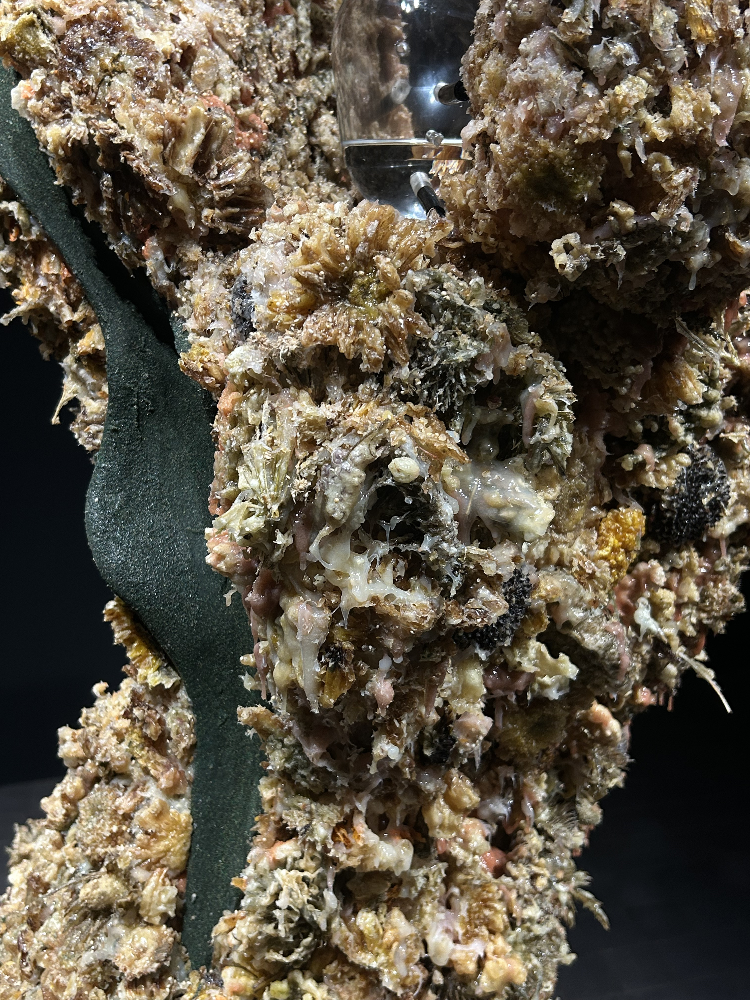
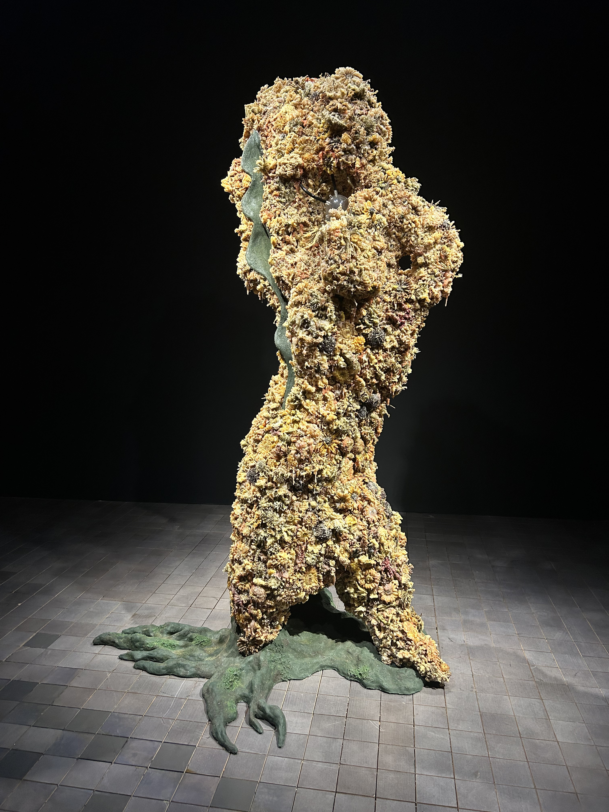
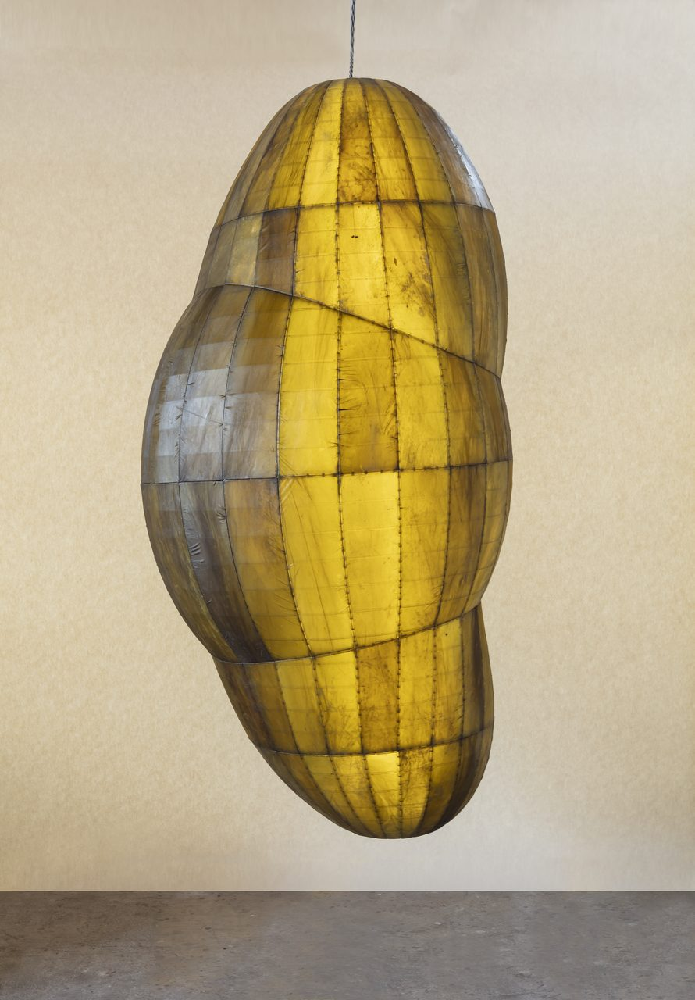

Artist : Anicka Yi, Location : Leeum Museum of Art
Anicka Yi is a contemporary artist known for her multidisciplinary approach to art, which combines elements of science, technology, and biology with a keen exploration of identity, labor, and ecological concerns. Born in Seoul, South Korea, in 1971, Yi moved to the United States at a young age. She received her BFA from the School of the Art Institute of Chicago and later earned an MFA from the University of California, Los Angeles (UCLA). Her work is characterized by an engagement with the intersections between the natural and synthetic worlds, frequently questioning the boundaries of human, non-human, and machine intelligences.
learn about Anicka YiBiotechnology and Microbial Life: Yi is known for her exploration of the non-human and the biological. In "Radiolaria", she uses scientific materials such as microbial cultures, silica, and other biotechnological elements to create sculptures that reflect the delicate yet complex forms of radiolarians. The work engages with the idea of life at a microscopic scale, using the form of radiolarians as a way to reflect on the fragility and complexity of life at its most fundamental level. Sensory Engagement: Like many of Yi's works, scent plays a crucial role in "Radiolaria". Yi often uses scent as a tool for creating an immersive experience. In this work, she may have incorporated scents that evoke the ocean or the biological processes associated with life at the microscopic level, making the viewer's experience more visceral. The work invites the audience to engage their senses beyond sight, challenging traditional ways of experiencing art. The smell of the work, paired with the visual aspect of the sculptures, creates a multi-sensory experience that draws attention to the ways in which humans perceive the world.
Floral Scent: As with many of Yi's works, scent plays a central role in "Flower-Fried Tempura." The installation features flowers that have been fried or altered in some way, and their aromatic qualities are a crucial part of the work. Yi often incorporates biological or botanical elements in her sculptures to evoke unique, bodily reactions and sensory experiences. The floral scent in this piece could be seen as representing an organic, natural world while simultaneously questioning how we interact with it. Biology and Sensory Perception: The piece explores the relationship between human sensory perception (especially through smell) and the biological processes that govern life. Yi's art often seeks to challenge conventional understandings of how we relate to the world and how our senses shape those relationships. In this case, "Flower-Fried Tempura" merges the visual with the olfactory (sense of smell), inviting viewers to experience the work not only with their eyes but also with their noses. Human and Non-Human Interaction: Yi's use of tempura (a human culinary art form) in combination with flowers (natural, non-human materials) creates an exploration of how humans interact with the non-human world, whether through consumption, manipulation, or aesthetic appreciation. Her works often explore how human-made and natural realms collide, creating new forms of understanding and experience.
Anicka Yi frequently uses organic materials like kelp, which is a type of seaweed, as a means of bridging the gap between the natural world and biotechnology. Kelp is an incredibly versatile and ecologically significant organism, known for its role in marine ecosystems as a carbon sink, habitat, and nutrient source. By using kelp in her sculptures, Yi invites us to consider the relationship between human-made and natural systems and how the two can interact, merge, and transform. Environmental Concerns and Ecological Interdependence: Kelp is a powerful symbol of ecological health, and it plays an important role in regulating ocean ecosystems. Kelp forests support diverse marine life, including fish, crustaceans, and invertebrates. Yi’s use of kelp in her sculptures may speak to concerns about ocean health, climate change, and the fragile balance between different living organisms within marine ecosystems. The fragility of kelp, which can be impacted by pollution or temperature changes in the ocean, aligns with Yi’s ongoing investigation into ecological fragility and the human impact on the environment.